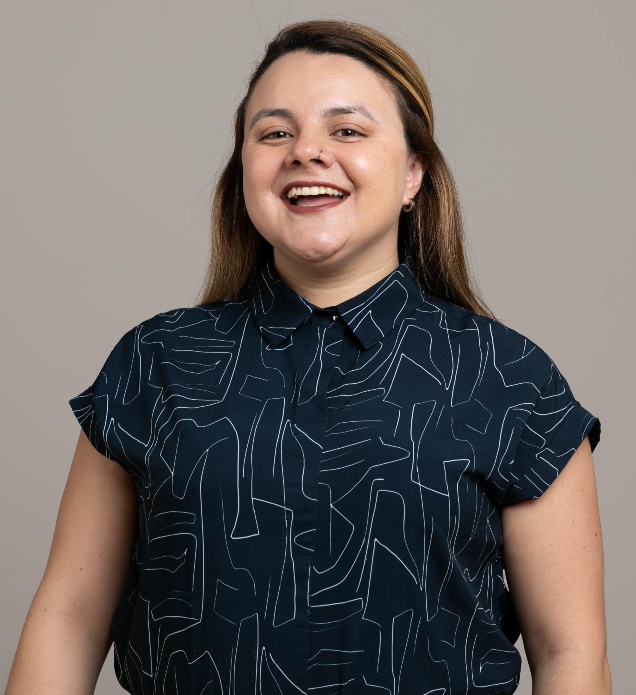
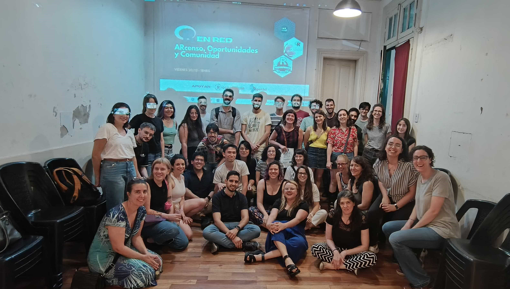
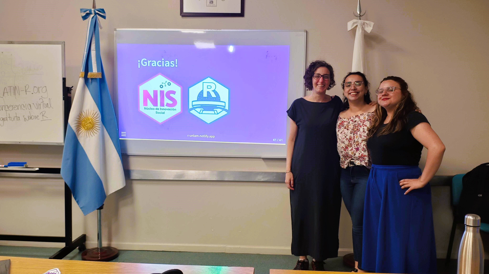
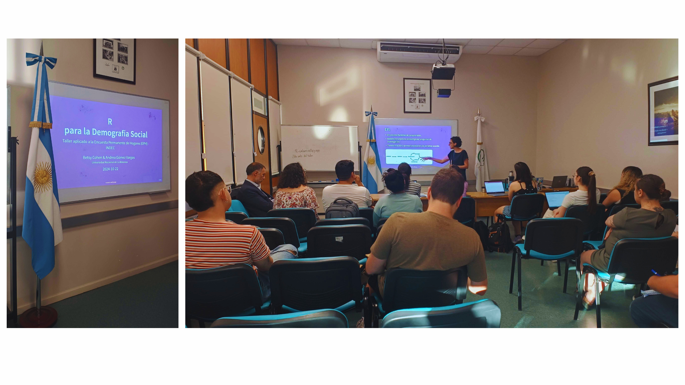

R en Buenos Aires: New Generations Working to Strengthen the Community

The R Consortium recently interviewed Andrea Gomez Vargas to find out about the R in Buenos Aires User Group. Andrea has a degree in sociology. Currently, she works as an analyst of population statistics at the National Institute of Statistics and Census - INDEC Argentina. She also teaches at universities in social science and data science.
Andrea has been an active member of the R community in Argentina and Latin America since 2018. She has been part of R-Ladies Buenos Aires and is currently part of the R-Ladies global team and the LatinR organizing committee.
Andrea was part of the 2023-2024 cohort of the rOpenSci champions program, and in 2024 she decided to take over the leadership of R en Buenos Aires.
Why did you decide to take the lead of the chapter?
I decided to take on the leadership of the chapter to actively contribute to the local impact of the R user community. Most of my knowledge has come from these communities - the trust and selfless support I’ve received has helped me grow as a professional and inspired me to take on projects I never thought I could. For this reason, I believe it is essential to reengage in activities to invite new generations to participate, explore new tools and opportunities, and collaborate in a space that welcomes all levels of experience and diverse professional backgrounds.

What motivates you to continue promoting R learning?
Communities are essential spaces for breaking down barriers to access information and knowledge, especially when it comes to free and open-source software. When these resources are paid or only reach a small percentage of people, it creates inequities. As a public university teacher, I am driven by the belief that everyone, regardless of background, should have the opportunity to learn and grow in a collaborative, open environment. That’s what keeps me motivated to continue spreading R knowledge and ensuring it remains accessible for all.
 Participants from the December 20th, 2024, meetup
What are your main objectives for the R chapter in Buenos Aires, and what challenges do you anticipate in achieving them?
The main objectives at this moment for the R chapter in Buenos Aires are to have more events to disseminate relevant topics in the community, such as the use of Quarto, Shiny, R packages, Git, and GitHub. A key challenge is ensuring that volunteer work doesn’t overwhelm us or lead to burnout, as organizing these events requires a lot of behind-the-scenes work. Currently, in addition to myself, Emanuel and Ariana are part of the local team coordinating activities—and although teamwork is essential, we must find a balance between collective effort and the well-being of the chapter members.
Please share about a project you are currently working on or have worked on in the past using the R language. Goal/reason, result, anything interesting, especially related to the industry you work in?
I’m working on the development of the arcenso package, a package with census data from Argentina, now in its first version on Github, but we are looking to reach CRAN.
arcenso is a project supported by the rOpenSci Champions Program cohort 2023-2024, with me as lead developer, Emanuel Ciardullo as co-developer and Luis D. Verde as mentor. It is a very important project because it makes census data accessible and homogenized in a way that any user can work with it in R.

Details from the arcenso page:
arcenso is a package under development that will allow access to the official data of the national population censuses in Argentina from the National Institute of Statistics and Census - INDEC. Currently, the results of the historical censuses of 1970, 1980, 1991, 2001, 2010 and 2022 are available in different formats through physical books, PDFs, Excel files or in REDATAM, without having a unified system or format that allows working with the data of these six census periods as a database. In addition, the presentation of the data is not homogeneous between the periods, making it difficult to make historical or serial comparisons of the available information.
This package aims to make census data available, homogenized and ready to use. It will include the census data from 1970 to 2022. Having a package of census information will allow the public and private sectors, citizens and other actors in society to access current and historical information on Argentina’s population, households and housing in a more accessible way.
For more information, see soyandrea.github.io/arcenso
What R resources/techniques do/did you use? (Posit (RStudio), Github, Tidyverse, etc.)
I use R on a daily basis to teach, work and collaborate in the community. Part of my work requires processing and combining various data sources (censuses, surveys and administrative records) to produce socio-demographic indicators for the country. I also design and develop digital statistical products, such as a Shiny app or dashboards. For all this I rely on several R packages for ETL and visualisation (gt, tidyverse, expss, plotly, quarto, and many more). And this is what I try to teach my students or the people who attend the workshops.
 Photo of Betsy, Ariana, and Andrea, organizers of the October 29, 2024, meetup, from left to right
You had a Meetup on October 29th, 2024. Can you share more about the topic covered?
[Editor’s note: There were two more events held by R en Buenos Aires at the end of 2024. Please see the meetup page for more information (in Spanish).]
The topic of the workshop was socio-demographic analysis in R using data from the Argentine Labour Force Survey. We learned about the R packages needed to calculate the indicators and how to present the results in graphs and tables.

The workshop was aimed at university students who are taking their first steps in R and who would like to do real-life practice guided by people from the community with experience in the field.
After the workshop a specific website r-unlam.netlify.app was created. We believe it is a good practice for people who cannot attend physically to have access to all the materials and to have the activities documented.
 Participants from the October 29th, 2024, meetup
Participants from the October 29th, 2024, meetup
You can reach out to R in Buenos Aires through the following:
How do I Build an R User Group?
R Consortium’s R User Group and Small Conference Support Program (RUGS) provides grants to help R groups organize, share information, and support each other worldwide. We have given grants over the past four years, encompassing over 76,000 members in over 90 user groups in 39 countries. We would like to include you! Cash grants and meetup.com accounts are awarded based on the intended use of the funds and the amount of money available to distribute